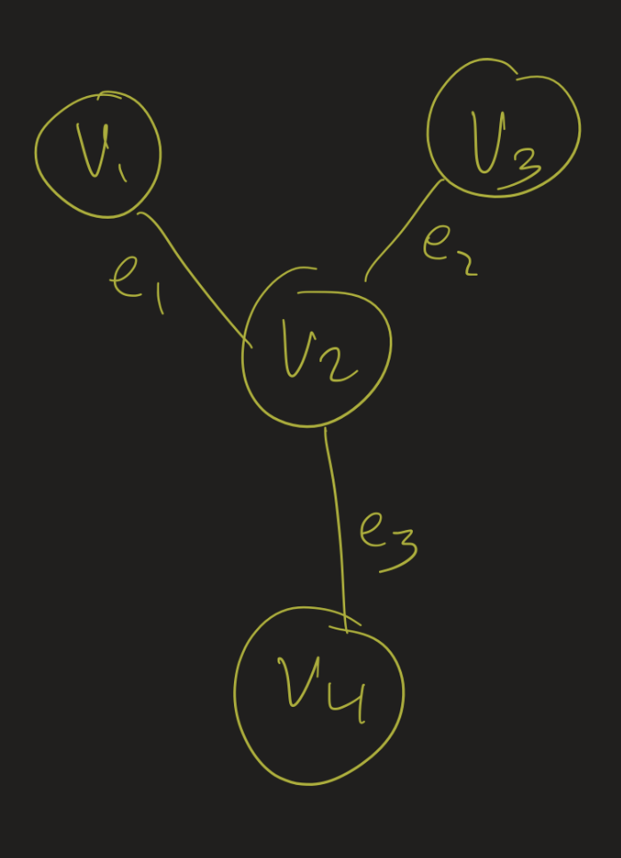

Discrete Math Lesson 20
Athar Abdul-Quader
30 November 2020
Problem Set 5
Q5(c)
Let \(A, B, C \in X\) such that \(A \subseteq B\) and \(B \subseteq C\). Show that \(A \subseteq C\). Q: How do you start this proof?
Let \(x \in A\). Then, since \(A \subseteq B\)…
Q5(d)
Let \(|U| \geq 2\). Show that \(\mathcal{P}(U)\) is not a tree.
Idea:
- Find a set in \(\mathcal{P}(U)\) with two subsets that are not comparable.
- \(|U| \geq 2\) means…
Graph Theory
Definitions
- A graph is a pair \((V, E)\).
- Elements of \(V\) are vertices (or nodes)
- Elements of \(E\) are edges.
- Directed / undirected.
Edit Distance
- Edit distance between two words
- Allowable operations:
- Insert a letter
- Delete a letter
- Replace one letter with another
- Q: given words \(w_1\) and \(w_2\), how “far” apart are the letters?
Edit Distance
- Vertices: words (arbitrary strings of letters)
- Edges: if two words are one operation apart.
- “cat” and “can”.
- “met” and “meet”
- Now turned this into a “shortest path” problem.
Representations
Many ways to represent graphs:
- Incidence matrix
- Adjacency list
- Adjacency matrix
Incidence
- A vertex \(v\) is incident to edge \(e\) if \(v\) is an endpoint of \(e\).
- Incidence matrix:
- 1 row for each vertex
- 1 column for each edge
- entry \((i, j)\) is 1 if \(v_i\) is incident to \(e_j\).
- if \(e_j\) is a self-loop at \(v_i\), then put a 2 instead.
- 0 otherwise
- Each column has at most 2 1’s.
- Many wasted 0s.
Example

\[ \begin{array}{c|c|c|c} & e_1 & e_2 & e_3 \\ v_1 & 1 & 0 & 0 \\ v_2 & 1 & 1 & 1 \\ v_3 & 0 & 1 & 0 \\ v_4 & 0 & 0 & 1 \end{array} \]
Sum of Degrees
Theorem: The sum of the degrees of a graph equals \(2|E|\).
Proof:
- Represent the graph using an incidence matrix.
- \(deg(v_i) = \sum\limits_{j=1}^n a_{i,j}\) (row sum)
- Sum of degrees?
- column sum = \(2|E|\)
- row sum = column sum
Adjacency List
- \(v\) is adjacent to \(w\) if they share an edge.
- Adjacency list for \(v\): list of vertices adjacent to \(v\)
- Adjacency list representation of \(G\): table of all adjacency lists
Example
Adjacency List:
- \(v_1\): \(v_2\)
- \(v_2\): \(v_1, v_3, v_4\)
- \(v_3\): \(v_2\)
- \(v_4\): \(v_3\)
Adjacency Matrix
- Rows / columns are vertices
- Entry \((i, j)\) has a 1 iff edge between \(v_i, v_j\).
Example:
\[ \begin{array}{c|c|c|c|c} & v_1 & v_2 & v_3 & v_4 \\ v_1 & 0 & 1 & 0 & 0 \\ v_2 & 1 & 0 & 1 & 1 \\ v_3 & 0 & 1 & 0 & 0 \\ v_4 & 0 & 1 & 0 & 0 \end{array} \]
Isomorphism
In what ways are the following graphs similar? In what ways are they different?
Definition
Let \(G = (V_G, E_G)\) and \(H = (V_H, E_H)\) be two undirected graphs. Then \(G\) and \(H\) are isomorphic if there is \(f : V_G \to V_H\) such that for all \(u, v \in V_G\), the number of edges between \(u\) and \(v\) is the same as the number of edges between \(f(u)\) and \(f(v)\).
\(f\) is called an isomorphism from \(G\) to \(H\).
- “iso”: same
- “morph”: form
Simple graphs
Two simple undirected graphs \(G\) and \(H\) are isomorphic if there is a bijection \(f : V_G \to V_H\) such that \(u\) and \(v\) are adjacent (in \(G\)) if and only if \(f(u)\) and \(f(v)\) are adjacent (in \(H\)).
Example
Are these graphs isomorphic?
Example
Are these graphs isomorphic?
Example
Are these graphs isomorphic?
Example
Structure
Look for isomorphism invariants:
- Number of vertices / edges
- Degree sequence
- Cycles of length \(n\)
- Connectivity (more later)
- Colorability
- Complement graph
Isomorphic graphs have the same properties. But none of these imply isomorphism!
Concept
- Isomorphic graphs are the same graph, structurally.
- Different representations of the same thing.
- Different names for vertices
- Different order of vertices.
- But they represent the same, underlying concept.
Automorphisms
- Let \(G = (V, E)\). An automorphism of \(G\) is an isomorphism from \(G\) to itself.
- Every graph has at least one: the identity.
- \(id : V \to V\) given by \(id(v) = v\).
- A kind of “symmetry”.
Symmetries of S_3

Symmetries of \(S_3\), the “star graph”:
- 3 rotations (including identity), 3 reflections
- Or: \(3! = 6\) permutations of 3 objects
- Keep the center fixed, and permute the other 3.
Rigid
How many automorphisms?
- Must not move vertex 0 (Why not?).
- Must not move vertex 1 (Why not?).
- Vertices 2 and 3?
Upcoming
- Connectivity
- Planarity
- Coloring
- Trees
Deadlines
- Problem Set 5: due tomorrow
- Problem Set 6: given Thursday, due next Friday (12/11)
- Final Project:
- Pick a topic by Friday (12/4)
- Presentation 12/10 (Zoom or asynchronous)
- Paper due 12/18
- Final Exam: given 12/10, due 12/17
- Possible extra help during finals week.